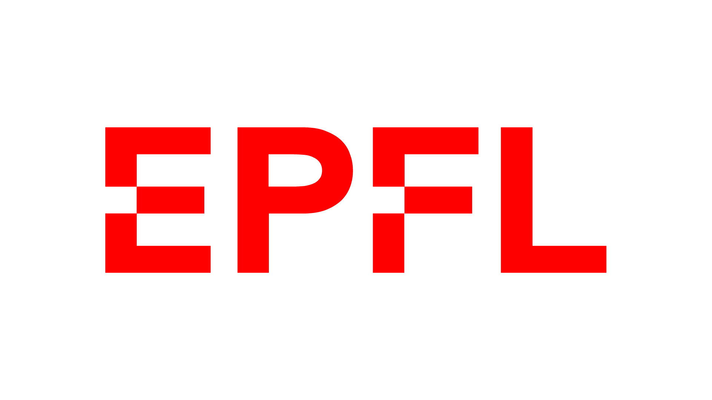

I'm an EPFL engineer trained in mathematics and financial engineering. I build systematic signals and production Python pipelines for physical commodity markets, from grains and oilseeds to fertilizers.

A side project I'm building in Python: a research tool that brings together trade-flow and fundamentals data, with a dashboard showing who produces, exports and imports a given commodity.
Dnext Intelligence
Morges, Switzerland
Ran a production pipeline of customs feeds, vessel lineups and production monitors feeding price-forecasting models. Read futures curves, spreads and options to judge what was priced in, and wrote a recurring outlook for trading clients.
Built a rule-based systematic signal framework (seasonality, quantile distributions, calendar spreads and cross-asset ratios), backtested and shipped weekly. Rebuilt cash-futures delivery economics as a repeatable pricing tool.
Forecast Brazilian ethanol demand with gradient boosting, ARIMA and Prophet, benchmarked out-of-sample. Converted to a full-time role.
EPFL, team projects
500,000+ comments from 13 subreddits, labelled with GPT-3.5 and scored with NLP models, then fed to Random Forest, LSTM and gradient boosting to predict returns.
Read the report (PDF) →198,275 votes from 11,381 users (2003–2013) analysed for voting patterns, success rates over time and influential voters.
See the interactive results →Predictive models on intraday data, combining vectorised big-data processing with optimisation to flag short-lived anomalies.